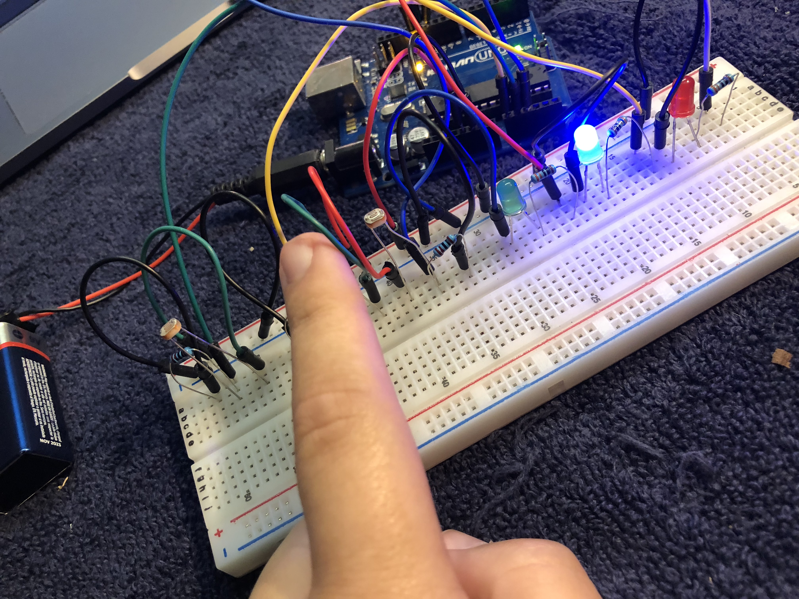
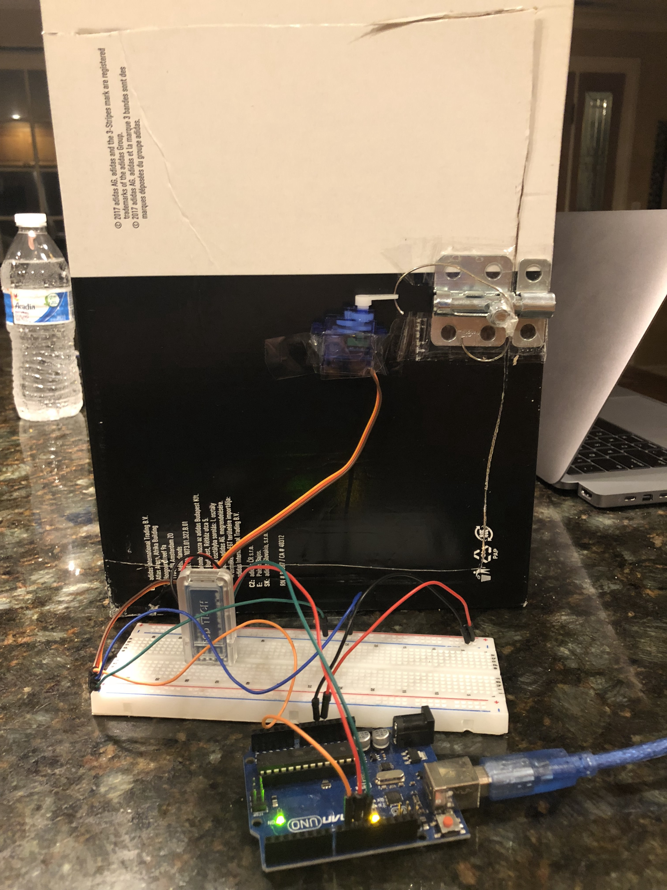
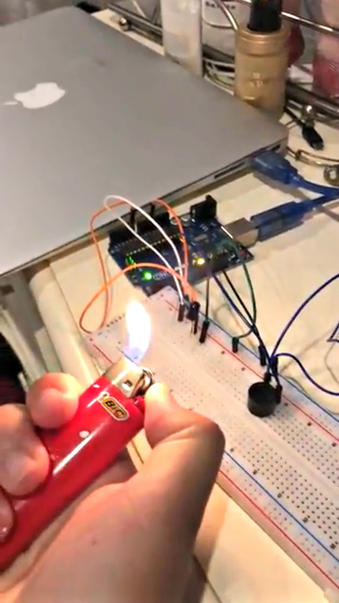
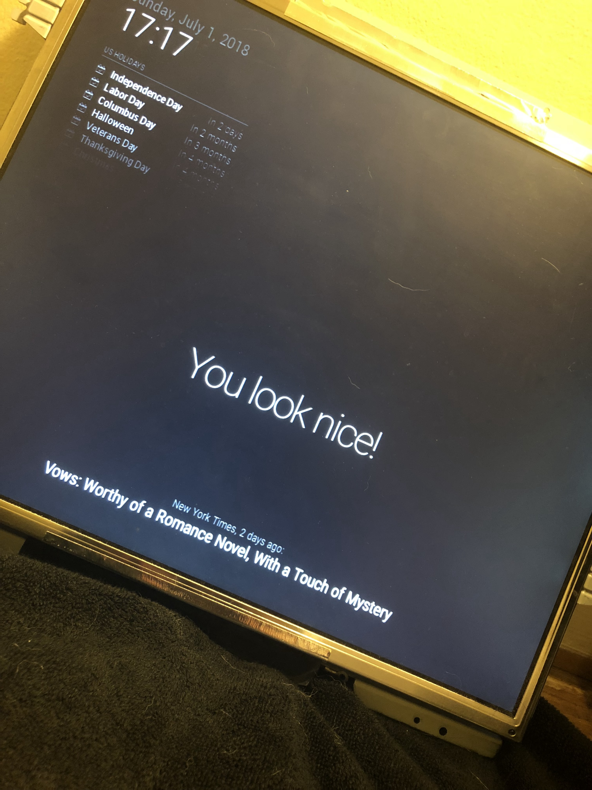
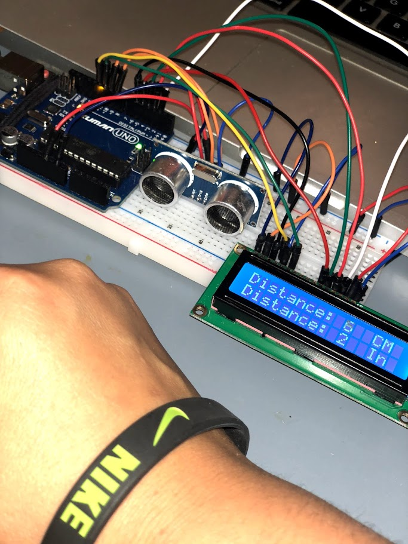

Super fun photoresistor project. A photoresistor is a light-controlled variable resistor. The
resistance of a photoresistor decreases with increasing incident light intensity.
I used 3 photoresistors to power on and off 3 LEDs. When you wave your hand over any of the three
resistors, it causes the corrisponding light to power on, and when your hand isn't there they will
power off. I found this project to be really fun, especially when I found out turning off my nearby
lamp also made them turn on.
The parts I used were:
Uno, 3 LEDs, 3 10k Ohm resistors for the LEDs, 3 LDR photoresistors, and jumper wires
10/18

Photoresistor video

This is my attempt at making a Bluetooth Smart door. I cut apart a shoebox to make a door
and taped
a latch to it.
A basic Android app made with MIT app inventor 2 is used to control the Servo motor that is
connected to the latch via paperclip.
The parts I used were:
Arduino uno, jumper wires, HC-05 Bluetooth module, and a Servo motor.
9/18
Bluetooth door video
Bluetooth door video

Not too much to explain for this project, just a simple Arduino smoke detector. It buzzes
when the
flame sensor
detects a smoke signal.
The parts I used were: Arduino
uno,
jumper wires,
piezo speaker, one resistor, & a flame sensor.
8/18
Smoke detector video

Another one of my top favorites. This was supposed to be a smart mirror, however I couldn't
find a
two-way mirror anywhere. It is powered by a Raspberry Pi 3 Model B. I used an old janky
monitor
I had laying around and took it apart, the only thing it is missing is the mirror.
The
parts I used were:
old monitor, VGA-HDMI dongle, RPI3 model B. rip two way mirror :(
7/18

A continuation of my distance project, with the addition of an LCD. I took out the flashing
lights
and buzzer and
added a visual representaiton of the distance between an object (my hand), and the sensor.
The
parts I used were:
Arduino Uno, jumper wires, HC-SR04 ultrasonic distance sensor, LCD, and resistors.
3/18

Arduino uno distance radar. When an object is close to the sensor, the buzzer will go off
and the
LED's will begin to flash with respect to how close the object is. For example, the closer
the
object is, the buzzer will be louder and the red LEDs will light up. When the object gets
further
and further away, the sound gets softer & the LEDs go towards the green, indicating the
object
isn't close. Notice I had to use blue LEDs in place of yellow ones because I didn't have
them on
hand at the time.
The parts I used were:
Arduino uno, 6 LEDs, resistors, jumper wires, piezo speaker & HC-SR04 ultrasonic distance
sensor
12/17

This was my final project for my CS 298 Embedded Systems course. It was by far my favorite
class &
project I have made to date. I chose to do my project based on the best show --"The
Office". I
presented 10 questions on the LCD screen that the user could answer. The user had two push
buttons,
one for true, the other for false. If the user got the right answer to a question, the
green LED
would flash & their score would increment by 1. If they got it wrong, the red LED would
flash &
their score stayed the same.
At the end of the game, the user would be presented with their final score, a max of 10
pts.
The
parts I used were:
Arduino nano, jumper wires, potentiometer resistors, LEDs, and LCD screen.
12/17